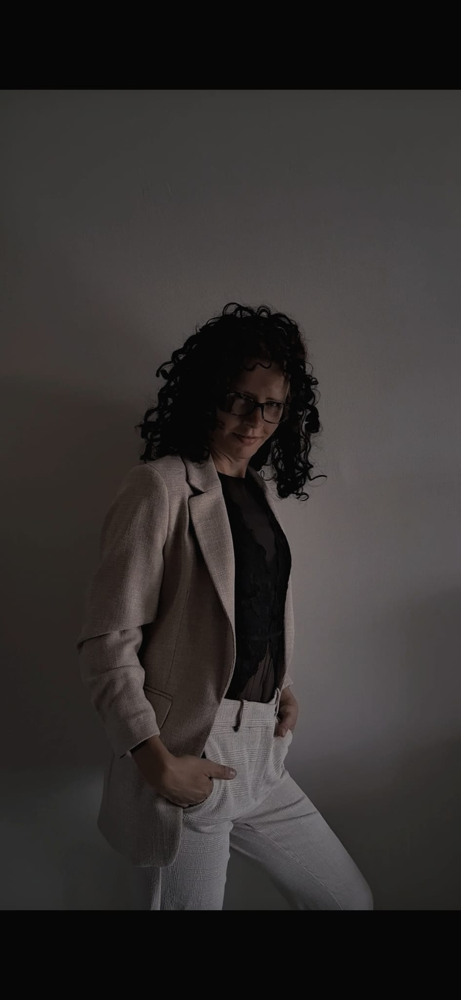

Corporate Alignment & Organisatie Dynamiek
"Duurzame groei en effectief leiderschap beginnen bij een zuiver fundament. Ik ontrafel de onzichtbare frictie binnen teams, directies en organisatiestructuren."

Systemische Organisatie-Analyse
Achter elk haperend proces, tegenvallende resultaten of hardnekkige frictie in een team schuilt een onderliggende dynamiek die niet met traditionele KPI's of managementmodellen op te lossen is.
Als Corporate Systemic Auditor breng ik haarscherp in kaart waar de energie binnen een organisatie stagneert. Of het nu gaat om misalignement binnen een directie, terugkerende patronen in personeelsverloop, of een strategische koers die op papier klopt maar in de praktijk niet van de grond komt.
Ik doorlicht het organisatiesysteem snel, scherp en zonder politieke ruis. Waar consultants vaak maanden nodig hebben voor dikke rapporten, leg ik binnen een audit direct de vinger op de zere plek en reik ik heldere stappen aan voor een duurzame reset.
Vanwege de intensiviteit van zakelijke trajecten accepteer ik een beperkt aantal organisatie-audits per kwartaal.
Aanvragen verlopen via e-mail naar tamara.esseveld@live.nl met als onderwerp: ZAKELIJK – [Naam Organisatie / Traject].
Vermeld kort de omvang van de organisatie, het huidige knelpunt en de gewenste termijn. Binnen 24 uur nemen we contact op voor een korte intake.
Klaar om de stroming en helderheid binnen uw organisatie te herstellen?
Zakelijk Aanbod
Voor leiders, ondernemers en C-level executives die voor een cruciale beslissing staan of stagnatie ervaren. Eén strategisch vraagstuk. Eén diepgaande analyse. Loop je vast op een strategische beslissing, is er sprake van onverklaarbare frictie in het leiderschapsteam, of wil je de haalbaarheid van een nieuwe koers toetsen? Tijdens deze scan analyseren we: • De onderstroom binnen de leiderschapslaag • Verborgen blokkades op het gebied van groei en omzet • Blinde vlekken in besluitvorming en strategie Resultaat: Directe scherpte, het wegnemen van twijfel en een heldere routekaart voor het leiderschap.
3-Daagse Intensieve Interventie bij Ziekteverzuim, Overbelasting & Burn-out. Wanneer medewerkers, sleutelfiguren of leidinggevenden uitvallen met een burn-out of langdurig ziekteverzuim, is dat zelden alleen een individueel probleem. Het is een symptoom van overbelasting en scheefgroei in de onderstroom van het hele systeem. In deze 3-daagse intensieve interventie pakken we de werkelijke oorzaak aan van energielekken en uitval: Oorzaken van verzuim blootleggen: Waar schuurt het werkproces en waar lekt de energie ongemerkt weg? Herstel van belastbaarheid: Haarscherp inzicht in grenzen, draagkracht en het doorbreken van roofbouw binnen teams. Acute symptoom- én systeemanalyse: Directe ontlasting van de getroffen medewerker/leidinggevende én herstructurering van het team om herhaling te voorkomen. Gestroomlijnde workflows & rust: Het opnieuw inrichten van rollen en verwachtingen voor een duurzame, gezonde werkomgeving. Resultaat: Snel herstel van rust, reductie van ziekteverzuimkosten, verhoogde belastbaarheid en een gezonde operationele basis.
Langdurige begeleiding voor leiders en teams die écht willen doorpakken. Veel bedrijven lopen vast op dezelfde terugkerende problemen: afdelingen die langs elkaar heen werken, besluiteloosheid aan de top, of een nieuwe koers die op papier heel mooi lijkt maar in de praktijk gewoon niet van de grond komt. Als de samenwerking in de kern schuurt, kost dat enorm veel energie, geld en werkplezier. Dienst 03 helpt om de rust en de heldere koers in het bedrijf weer terug te brengen: Samen één lijn trekken: Snel meningsverschillen en onduidelijkheden binnen het bestuur of managementteam oplossen. Veranderingen die wél slagen: Zorgen dat nieuwe plannen en afspraken ook echt worden nageleefd op de werkvloer. Minder afhankelijk van de eigenaar: De organisatie zo inrichten dat het bedrijf ook soepel doordraait als de oprichter of CEO er even niet is. Vaste sparringpartner op de achtergrond: Onafhankelijk advies en begeleiding bij grote keuzes, zoals een reorganisatie, overname of snelle groei. Resultaat: Een zuiver uitgelijnde organisatie, klaar voor duurzame schaalvergroting en gezonde groei.
Continue klankbordondersteuning voor de CEO, DGA of directie. Als leider sta je er soms alleen voor. Met Executive Systemic Sparring heb je een onafhankelijke, scherpe sparringpartner aan je zijde die meekijkt onder de oppervlakte van je dagelijkse bedrijfsvoering. • Maandelijkse strategische auditsessie • Directe reflectie bij acute vraagstukken of conflicten • Blijvende bewaking van jouw persoonlijke en zakelijke alignment Resultaat: Scherpte in keuzes, voorkomen van kostbare misstappen en een leider die krachtig in zijn/haar fundament staat.
Neem contact op voor een intakegesprek of vrijblijvende offerte.
Zakelijke Aanvraag DoenOf schrijf je in voor de zakelijke nieuwsbrief